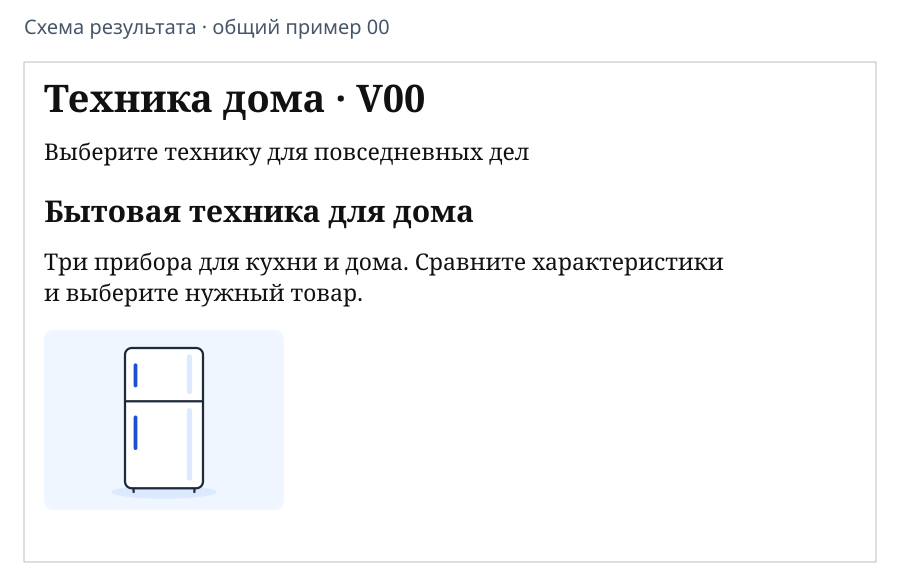
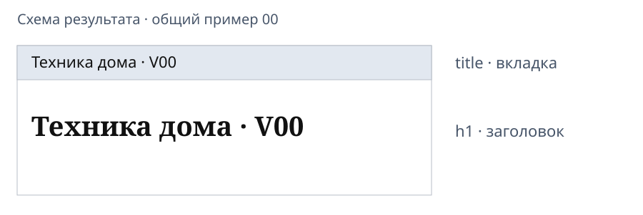
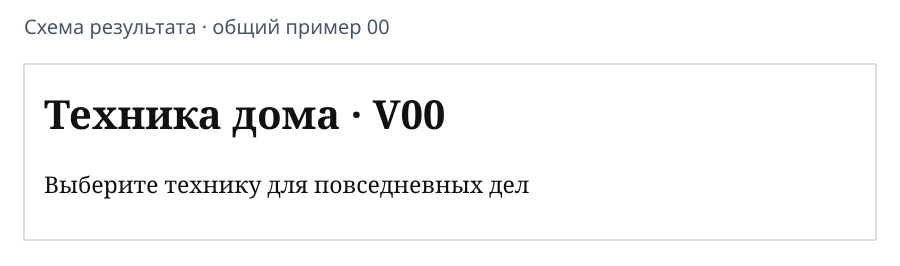
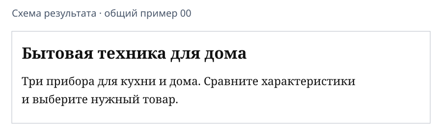
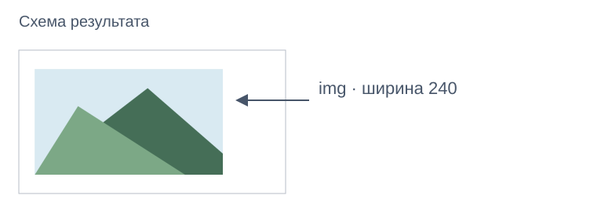

Первая HTML-страница: самостоятельная практическая работа
Какой результат нужен сегодня
На первой паре 21 октября работайте самостоятельно. Результат покажете преподавателю на второй паре.
Сегодня собираем обычную страницу сверху вниз: заголовок, пояснение, описание и картинка. Ниже — схема примера варианта 01; у вас будут свои тексты и изображение.

Макеты телефона в листе варианта показывают будущие этапы. Располагать картинку сбоку, делать цветные кнопки и форму сегодня не нужно.
Возьмите свои данные
Откройте свой вариант 01–39. Из таблицы «Содержание главной страницы» понадобятся:
| Данные варианта | Элемент страницы |
|---|---|
| Название приложения | Вкладка title и главный заголовок h1 |
| Короткое пояснение | Первый абзац p |
| Заголовок главной | Заголовок h2 |
| Описание | Второй абзац p |
| Основное изображение | Изображение img |
Ниже разобран вариант 01 «На тропе». Во всех примерах заменяйте его содержание своим. Проект App Inventor сохраните отдельно.
Подготовьте папку и редактор
- В Проводнике создайте папку
VariantNN-webв доступном месте для учебных работ.NN— ваш двухзначный номер, например04. - Откройте папку в имеющемся редакторе кода, например VS Code: «Файл → Открыть папку». Создайте новый файл.
- Если редактора кода нет, используйте Блокнот. Word не подходит.
Проверка: вы можете найти свою папку снова. Работайте в ней, не в папке App Inventor.
Вставьте каркас документа
Скопируйте в пустой файл весь каркас. В строке title замените название на своё:
<!doctype html>
<html lang="ru">
<head>
<meta charset="utf-8">
<meta name="viewport" content="width=device-width, initial-scale=1">
<title>На тропе · V01</title>
</head>
<body>
</body>
</html>
Пока body пуст. В следующих шагах будем добавлять содержимое между <body> и </body>, не создавая второй каркас.
Сохраните именно HTML-файл
В VS Code: Ctrl+S → своя папка → имя index.html. Кодировка в строке состояния — UTF-8; при другой выберите «Сохранить с кодировкой → UTF-8».
В Блокноте: «Файл → Сохранить как» → своя папка → имя index.html → тип «Все файлы» → кодировка UTF-8 → «Сохранить».
Проверьте имя в Проводнике. Если расширение скрыто, покажите «Расширения имён файлов» через меню «Вид» (в Windows 11: «Вид → Показать»).
Проверка: имя — index.html, а не index.html.txt.
Откройте файл в браузере
В Проводнике: правая кнопка на index.html → «Открыть с помощью → Google Chrome». Редактор оставьте открытым.
Пока результат — пустая белая страница с вашим названием во вкладке. Это нормально.
Редактор: изменить → Ctrl+S
Chrome: обновить → Ctrl+R
Повторяйте эти два действия после каждого изменения. Файл на диске — ваш документ; браузер показывает прочитанный из него результат. Интернет для открытия не нужен.
Вкладка и страница — разные места

| Часть каркаса | Назначение |
|---|---|
doctype |
Объявляет современный HTML |
html lang="ru" |
Весь документ; язык — русский |
head |
Служебные сведения о странице |
meta charset |
Кодировка; сохраните UTF-8 и в файле |
meta name="viewport" |
Начальное отображение на узком экране; оставьте строку целиком |
title |
Название вкладки |
body |
Видимое содержание |
title уже заполнен. h1 сейчас добавим. Подписи и стрелки на схемах — пояснения, их создавать не нужно.
Как читать тег
<p>Выберите прогулку для небольшой компании</p>
<p> открывает абзац, </p> закрывает его. Между ними — текст, который вы заменяете своим. Вместе это элемент HTML.
<html lang="ru">
lang — атрибут, уточнение в открывающем теге. После = в прямых кавычках записано значение ru.
Вложенность закрывается изнутри наружу: содержимое body — перед </body>, затем закрывается html. Пробелы в начале строк помогают видеть вложенность.
Сделайте заголовок и пояснение

На пустой строке между <body> и </body> добавьте:
<h1>На тропе · V01</h1>
<p>Выберите прогулку для небольшой компании</p>
Замените: в h1 — название приложения, в p — короткое пояснение из своего листа.
h1 — главный заголовок, p — абзац. Сохраните файл и обновите Chrome.
Проверка: появились две части, как на схеме. Название нужно поменять и в title, и в h1: одно не меняет другое.
Добавьте заголовок содержания и описание

После первого </p>, перед </body> добавьте:
<h2>Маршруты выходного дня</h2>
<p>Три маршрута: лесная тропа, берег реки и горный обзор. Найдите свой вариант отдыха.</p>
Замените: в h2 — «Заголовок главной», в новом p — «Описание» своего варианта. Короткое пояснение в первом абзаце сохраните.
h2 — заголовок следующего уровня после h1. Сохраните и обновите.
Проверка: сверху вниз видны название, пояснение, заголовок содержания и описание.
Скопируйте отдельную картинку
В строке «Основное изображение» своего варианта найдите имя файла. У варианта 01 это mountains.png.
- В своей папке проекта создайте подпапку
images. - Скопируйте туда нужное изображение из набора варианта:
Ctrl+C→ открыть своюimages→Ctrl+V. - Если читаете лист на сайте, найдите отдельную иллюстрацию внизу листа: правая кнопка → «Сохранить изображение как» → своя
images. Сохраните исходное имя и расширение.
Variant01-web/
index.html
images/
mountains.png
Копируем готовый файл. Рисовать его самостоятельно не требуется. Снимок всего экрана screen1.png для этого шага не подходит.
Если файл недоступен, завершите текстовую часть и запишите имя нужного изображения для второй пары.
Выведите картинку через img

После абзаца с описанием, перед </body> добавьте:
<img src="images/mountains.png" alt="Горный пейзаж" width="240">
| Часть | Что сделать |
|---|---|
src |
После images/ указать точное имя своего файла |
alt |
Кратко описать содержимое изображения своими словами |
width="240" |
Оставить ширину 240; высота подстроится автоматически |
У img нет закрывающего тега. Сохраните и обновите.
Проверка: под описанием появилась картинка, а не значок ошибки.
Почему нужна папка images
src="images/mountains.png" означает: рядом с index.html открыть папку images, найти файл mountains.png.
Это относительный путь. Используйте /, точное имя и расширение. Полный путь с диском компьютера не нужен.
HTML ссылается на картинку, но не помещает её внутрь себя. Сохраняйте и переносите всю папку проекта.
alt помогает понять изображение, если оно недоступно или страницу читает программа экранного доступа. Видимую подпись под картинкой он не создаёт.
Сверьте итоговый код
Это полный учебный пример варианта 01. В своей работе оставьте свои тексты, имя изображения и описание alt.
<!doctype html>
<html lang="ru">
<head>
<meta charset="utf-8">
<meta name="viewport" content="width=device-width, initial-scale=1">
<title>На тропе · V01</title>
</head>
<body>
<h1>На тропе · V01</h1>
<p>Выберите прогулку для небольшой компании</p>
<h2>Маршруты выходного дня</h2>
<p>Три маршрута: лесная тропа, берег реки и горный обзор. Найдите свой вариант отдыха.</p>
<img src="images/mountains.png" alt="Горный пейзаж" width="240">
</body>
</html>
Результат первой пары соответствует первой схеме статьи: одна вертикальная страница без цветного оформления и сложной раскладки.
Если не получилось
| Проблема | Первая проверка |
|---|---|
| В Chrome виден код | Имя файла точно index.html, без .txt; открыть через Chrome |
| Пустая или старая страница | Текст внутри body; Ctrl+S в редакторе, Ctrl+R в Chrome; одна и та же папка |
| Чужой заголовок | Заменены обе записи: title и h1 |
| Непонятные русские буквы | Файл сохранён в UTF-8; в каркасе сохранён meta charset |
| Картинка не появилась | Файл есть в своей images; имя, расширение и путь совпадают с src |
Если всё ещё не работает, запишите шаг и симптом. Исправляйте одну причину за раз, затем сохраняйте и проверяйте.
Что показать на второй паре
- Папку проекта, HTML-файл и изображение в
images. - Страницу своего варианта: четыре текстовые части и картинку.
- В коде —
head,body,title,h1,p,h2,img. - Одно изменение абзаца: изменить → сохранить → обновить.
Перед завершением закройте вкладку с результатом и снова откройте index.html из своей папки. Текст и картинка должны остаться. Незавершённые шаги отметьте явно.